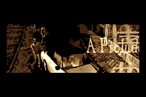

Pinball of the Dead, The (Europe) (En,Fr,De,Es,It)
EEPROM 4K
Cartridge Identity
- Game Code
APDP(FamilyAPD)- Header Title
PINBALL OF T- Maker / Revision
8P/ rev0- ROM Size
- 8.0 MiB (8,388,608 B)
- Save Media
EEPROM 4K- SHA-256
57578a9edff810790d7430e6d4f2c08cf0cd36299cb738862cefba104f0da7ef- Engine / SDK Group
comm-002(145 families)
Screenshots

Observed Battery Save Layout
- Fill Byte & Active Size
0x00fill · 309–310 / 512 B active (entropy 5.63 bits/B)- Active Offset Ranges
0x0,0x3–0x7,0xB–0xF,0x11–0x16,0x19–0x1B,0x1D–0x1F,0x21–0x22,0x25–0x27, +8 more (94 total)- ASCII Magic / Headers
DTOPT- Observed Variable Regions
- 3 bytes across 3 spans:
0xB,0xD,0xF - Candidate Checksum/Counter Spans
0xB,0xD,0xF
Hardware MMIO Subsystems
ppu_display0x800098c
Regional Variants & Revisions (Family APD)
- Pinball of the Dead, The (USA) (
APDE, 8 MiB)